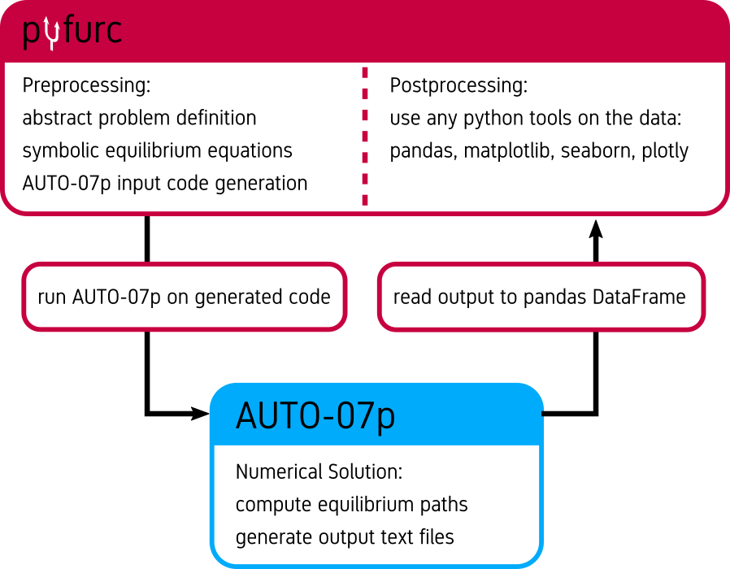

pyfurc Documentation¶
Welcome to pyfurc’s documentation and user guide.
What is pyfurc?¶
pyfurc is a python module that facilitates calculations for non-linear mechanical systems exhibiting bifurcations with the generalized path-following FORTRAN program AUTO-07p directly in python.
Energy expressions, degrees of freedom and loads are defined using sympy’s symbolic math processing functionality, and equilibrium equations are automatically derived symbolically.
pyfurc then generates FORTRAN code for the bifurcation problem, calls the AUTO-07p routines and reads the result into a pandas DataFrame for post-processing in python.
The basic functionality looks like this:
{kind=link}
Solving a bifurcation problem can be this simple:
import pyfurc as pf
import sympy as sp
import matplotlib.pyplot as plt
phi = pf.PhysicalQuantity("\\varphi", quantity_type="DOF")
P = pf.PhysicalQuantity("P", quantity_type="load")
cT = 10/3.1415
ell = 0.5
V = pf.Energy(1/2*cT*phi**2-P*ell*(1-sp.cos(phi)))
bf = pf.BifurcationProblem(V, name="hinged_cantilever")
bf.set_parameter("RL1", 12.73) #set maximum load
solver = pf.BifurcationProblemSolver(bf)
solver.solve() # solve problem
for dat in bf.solution.raw_data:
plt.plot(dat["U(1)"], dat["PAR(1)"])
To get started, check out the Quickstart section below or check the in-depth guides in the Table of Contents.
Quickstart¶
Prerequisites:
Running Linux distribution
Python 3.8.2+
pip
For installation of pyfurc run
pip3 install pyfurc
If the installation was successful run
python3 -m pyfurc --install-auto
to install and configure AUTO-07p.
After this you’re ready to go.